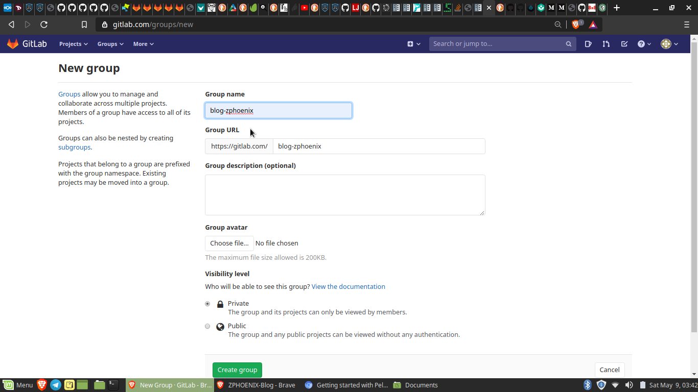
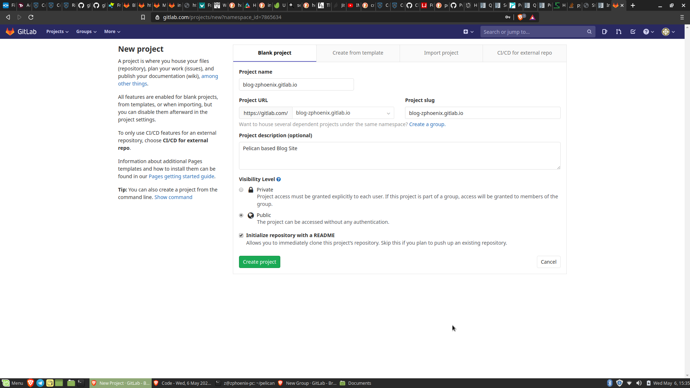
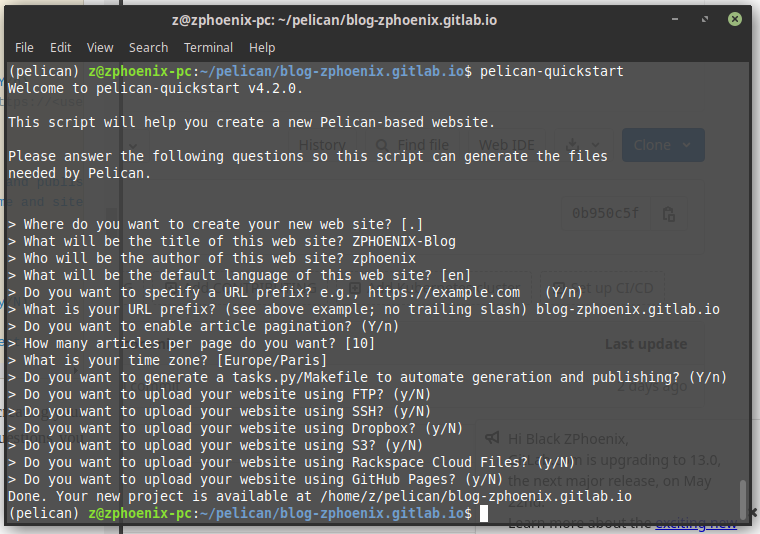
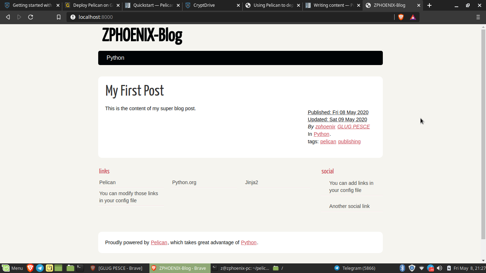
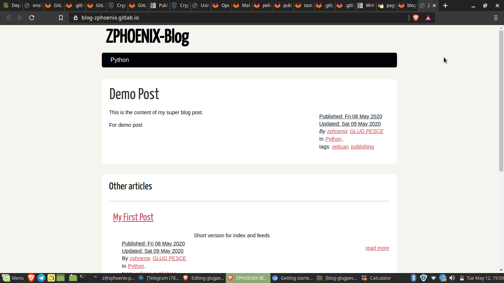

Getting started with Pelican
Published on May 9, 2020 by zphoenix
TL;DR:
Pelican is a static site
generator written mainly in Python and why we call it static is because it
doesnt require any database and its very simple.
Pelican takes the content in mostly as text or markdown format, push it to
a template and outputs as a HTML and CSS page, sometime even JS if added
in the template. Pelican is simple and lightweight unlike other websites
build in HTML or CSS or PHP which have a complex structure.
Prerequisites
Contents
- Installations
- Configuration
- Create a repo/project in gitlab
- Initial setup to get Pelican
- Write the first blog
- The OUTPUT
- Thinking to host Pelican?
- THEMENATION - Adding a theme
- Futuristic
- Conclusion
1. Installations
Install Python
sudo apt-get install python3.6
or
sudo add-apt-repository ppa:deadsnakes/ppa
sudo apt-get update
sudo apt-get install python3.6
Install PIP
sudo apt install python3-pip
sudo apt install build-essential python3-dev
Install Git
sudo apt install git
#if any error persists try
sudo add-apt-repository ppa:git-core/ppa
sudo apt update
sudo apt install git
Install Virtualenv
sudo apt install virtualenv
virtualenv pelican
2. Configuration
3. Create a repo/project in gitlab
a.Sign Up
Register here
https://gitlab.com/users/sign_up
So we have two options
-
Either get the pelican site running on
your_username.gitlab.io or
-
create a group and riunning on
your_groupname.gitlab.io
Here lets follow group method.
-
Create a new group
Firstly lets create a group & click the link
to create a new group : https://gitlab.com/groups/new

_Note : _In the place of zphoenix have your username.

So we create a new project under same name
blog-username.gitlab.io
b. Clone the project
Lets clone the project and start working
on it.
-
Click on
Clone & Copy the ssh key
-
Open Terminal
ctrl+shift+t
-
Clone the repo
git clone
git@gitlab.com:blog-username.gitlab.io/blog-username.gitlab.io.git
Output
(pelican) z@zphoenix-pc:~/pelican$ git clone
git@gitlab.com:blog-zphoenix.gitlab.io/blog-zphoenix.gitlab.io.git
Cloning into 'blog-zphoenix.gitlab.io'...
remote: Enumerating objects: 3, done.
remote: Counting objects: 100% (3/3), done.
remote: Compressing objects: 100% (2/2), done.
remote: Total 3 (delta 0), reused 0 (delta 0), pack-reused 0
Receiving objects: 100% (3/3), done.
4. Initial setup to get Pelican
-
Installation
pip install pelican
pip install markdown
-
Get a basic site
pelican-quickstart
Output
_Note_ : This command generates all required files basically basic pelican
structure, there will be questions poped up, makesure you give URL Prefix
as 'blog-username.gitlab.io'
and leave rest as default values [ (Y/n)
have default value as Yes and (y/N) is vice-versa ]
5. Write the first
blog
-
Create a blog post
cd content
touch firstPost.md` #To create the file
nano firstPost.md` #To open the file
Add these below contents
Title: My First Post
Date: 2020-05-08 18:59<br>
Modified: 2020-05-09 19:30
Category: Python <br>
Tags: pelican, publishing <br>
Slug: my-first-post <br>
Authors: zphoenix, GLUG PESCE <br>
Summary: Short version for index and feeds <br>
This is the content of my super blog post.
Note : Reference - get
pelican https://docs.getpelican.com/en/3.6.3/content.html and Slug is
nothing but filename without space, makesure to give `-` instead of ` `
#space
Once you are done press ctrl + s to save and ctrl + x to exit
from nano editor.
Convert post into html
pelican content
make html
Try to check if public folder is created, if that has generated proceEd,
else cross check and try again!!!
6. The OUTPUT
Inorder to preview the firstPost.md - The blog post
in your terminal type
make serve
Now open http://localhost:8000 in your web browser, your very first
pelican based blog site is hosted locally :)
Output
Hurray !!!! Congratulations here goes your Pelican BLog Post**
Note : To preview in our localhost you can even `cd` into
public folder
and type
-
python -m SimpleHTTPServer #if using Python2 -
python -m
http.server
#if using Python3
7. Thinking to host Pelican?
Lets get three important files
But before that we have to make three important changes, as gitlab
requires public directory and it helps in hosting properly. In or case its
output so we should change it from
output to
public.
-
Open to
publishconf.py and pelicanconf.py file and at the end add the below
codes
OUTPUT_PATH = '/public'
-
Open to Makefile and search for
OUTPUTDIR=$(BASEDIR)/output in that
line change output to public like below
OUTPUTDIR=$(BASEDIR)/public
Now back to business, so lets create requirements.txt, .gitlab-ci.yml and
.gitignore.
requirement.txt
But before getting into it lets try do get a
requirements.txt file. Why is requirements.txt is important?
We all may run different python environments and with different versions
and we primarily generate and share requirements.txt file to make it
easier for other developers to install the correct versions of the
required Python libraries/Packages to run the Python code that we have
written.
touch requirements.txt
nano requirements.txt
Paste the below contents in requirements.txt
markdown
pelican
.gitlab-ci.yml <hr>
It is a configuration file that will build and deploy or host our website
in Gitlab Pages.
touch .gitlab-ci.yml
nano .gitlab-ci.yml
Paste these content in .gitlab-ci.yml
image: python:3.6-alpine
pages:
script:
- pip install -r requirements.txt
- pelican -s publishconf.py
artifacts:
paths:
- public/
only:
- master
-
.gitignore <hr>
Lets create a .gitignore.
touch .gitignore
nano .gitignore
Paste these content in .gitignore
/public
*.pyc
Lets PUSH !!!
Now lets push the pelican source code.
git add .
git commit -m "First Commit to add Pelican Blog Site"
git push
CI/CD Configuration
So go to CI/CD - > pipeline -> jobs
If the status of your job is passed then your Pelican based Blog Site
you will find it at blog-username.gitlab.io

So your dream come true your very own Blog site LIVE !!! - Check out it
here - blog-zphoenix.gitlab.io
8. THEMENATION
- Adding a Theme
9. Futuristic
-
Add more post - Start writing blogs buddies
- Get
a new theme for your site Try a different one, try to experiment with
themes :)
- - Add few javascript tricks and let me know, im still learning
JS !
10. Conclusion
Having said this blog is just a kickstart and its
only your try will fetch you a great work out of you. Pelican is python
based and its so easy to work and deploy too. And ifou are looking for a
https://gitlab.com/blog-zphoenix/blog-zphoenix.gitlab.io.
In the virtue of getting writing this blog here is the OUTPUT :
https://blog-zphoenix.gitlab.io/
If any errors do ping me or if you had a better pelican hosted share it
with me, there will be something that i can learn from yours.
-
Telegram :
@blackzphoenix
-
Email ID : zphoenix@disroot.org
-
Mastodon :
zphoenix@fsmi.social
Reference